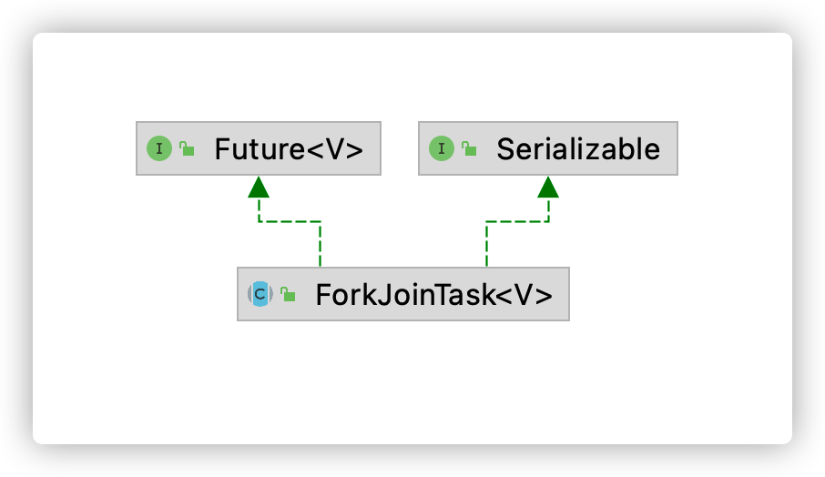

Fork/Join 框架入门
概述
fork/join 框架在 Java 7 中呈现。它提供了一些工具，通过尝试使用所有可用的处理器内核来帮助加速并行处理 - 这是通过分而治之的方法实现的——分治算法。
Java 8 的并行流背后使用的基础架构就是该框架。
在实践中，这意味着框架首先“fork(分叉)”，递归地将任务分解为较小的独立子任务，直到它们足够简单以便异步执行，也就是任务分发。
之后，“join(并入)”部分开始，其中所有子任务的结果递归地连接成单个结果，或者在返回 void 的任务的情况下，程序只是等待直到执行每个子任务，也就是任务细分执行，并等待返回。
为了提供有效的并行执行，fork/join 框架使用一个名为 ForkJoinPool 的线程池，它管理 ForkJoinWorkerThread 类型的工作线程。
ForkJoinPool
ForkJoinPool 是框架的核心。它是 ExecutorService 的一个实现，它管理工作线程并为我们提供工具来获取有关线程池状态和性能的信息。
工作线程当时只能执行一个任务，但 ForkJoinPool 不会为每个子任务创建单独的线程。相反，池中的每个线程都有自己的双端队列（或deque），用于存储任务。
这种架构对于在工作窃取算法的帮助下平衡线程的工作负载至关重要。
工作窃取算法 (Work stealing)
简单地说 - 空闲线程试图从繁忙线程的双端队列中“窃取”工作。
默认情况下，工作线程首先优先处理来自它们自己的队列（LIFO 或 FIFO，取决于模式）的任务。其次线程从另一个忙线程的双端队列尾部或全局入口队列中获取任务。
这种方法最大限度地减少了线程竞争任务的可能性。它还减少了线程必须寻找工作的次数，因为它首先在最大可用工作块上工作。
ForkJoinPool 实例化
在 Java 8 中，访问 ForkJoinPool 实例的最方便方法是使用其静态方法 commonPool()。顾名思义，这将提供对公共池的引用，公共池是. 每个 ForkJoinTask 的默认线程池。
根据 Oracle 文档，使用预定义的公共池可以减少资源消耗，因为这会阻止为每个任务创建单独的线程池。
1 | ForkJoinPool commonPool = ForkJoinPool.commonPool(); |
通过创建 ForkJoinPool 并将其分配给工具类 (PoolUtil) 的公共静态字段，可以在 Java 7 中实现相同的行为：
1 | public static ForkJoinPool forkJoinPool = new ForkJoinPool(); |
然后，可以很容易的访问：
1 | ForkJoinPool forkJoinPool = PoolUtil.forkJoinPool; |
使用 ForkJoinPool 的构造函数，可以创建具有特定级别的并行性，线程工厂和异常处理程序的自定义线程池。默认空构造使用当前可用的处理器核心 - Runtime.getRuntime().availableProcessors()。
小心使用 commonPool
很多时候，我们使用提供一些基于并行处理的功能的内置结构或框架。在大多数情况下，我们可以指定我们自己的线程池，它将在并行处理期间使用，但有时，我们不想指定我们自己的线程池，而只是使用当前库的默认值。每个库都有自己的方法来定义默认线程池。例如，Spring 框架在大多数情况下使用线程池，为每个任务创建一个新线程。
ForkJoinPool#commonPool() 是一个静态线程池。JDK 中主要使用 commonPool 的两个主要功能为：CompletableFuture 和 Parallel Streams。这两个功能之间有一个小区别：使用 CompletableFuture，您可以指定自己的线程池并且不使用来自 commonPool 的线程，而在 Parallel Streams 的情况下则不能。
在决定是否使用 commonPool 的决策过程中要记住的关键是我们传递到线程池的任务的目的。一般来说，有两种类型的任务：计算和阻塞。
在计算任务的情况下，我们创建了一个绝对避免任何阻塞的任务，例如 I/O 操作（数据库调用、同步、线程睡眠等…）。您的任务在哪个线程上运行无关紧要，您可以让 CPU 保持忙碌并且不等待任何资源。这时候我们可以随意使用 commonPool 来执行工作。
但是，如果您打算使用 commonPool 来执行阻塞任务，那么您需要考虑一些后果。 如果您有三个以上的可用 CPU，那么您的 commonPool 会自动调整为两个线程，并且您可以通过将线程保持在阻塞状态来非常轻松地阻止同时使用 commonPool 的系统的任何其他部分的执行。根据经验，我们可以为阻塞任务创建自己的线程池，并使系统的其余部分保持分离和可预测。
根本原因的有关 commonPool 的隐藏陷阱：即 commonPool 在计算时会使用多少线程。该值由 JVM 基于可用内核的数量自动计算。
我们使用下面的代码进行测试：
1 | public class CommonPoolTest { |
您可以注意到我们上面有一个非常简单的阻塞调用实现。执行 100 次 1 秒阻塞调用的迭代。让我们看看结果：
1 | docker run -it --cpus 4 -v ${PWD}:/app --workdir /app adoptopenjdk/openjdk11 java CommonPoolTest.java |
我们为这次运行分配了 4 个 CPU，并在 34 秒内完成了这个程序。我们可以看到 JVM 自动发现它是在一个Docker 容器中执行的，并限制了 4 个CPU和 3 个专用线程来执行。
1 | docker run -it --cpus 2 -v ${PWD}:/app --workdir /app adoptopenjdk/openjdk11 java CommonPoolTest.java |
在第二个例子中，我们只使用了 2 个 CPU，我们可以注意到 JVM 自动将并行度限制为 1。但是为什么只用了 1 秒？1 秒内到底发生了什么？！
您可以在 commonPool 中实现三种模式。
- parallelism > 2 — JDK 为
commonPool创建 (CPUs - 1) 个线程 - parallelism = 1 — JDK 为每个提交的任务创建一个新线程
- parallelism = 0 — 提交的任务在调用者自身的线程上执行
parallelism 默认为 -1，则执行如下判断，也就是当前 CPUs - 1，单核 CPU 则为 1。
1 | if (parallelism < 0 && // default 1 less than #cores |
如果要覆盖 JDK 的符合人机工程学的行为，还可以指定三个系统属性：
- java.util.concurrent.ForkJoinPool.common.parallelism
- java.util.concurrent.ForkJoinPool.common.threadFactory
- java.util.concurrent.ForkJoinPool.common.exceptionHandler
ForkJoinTask

ForkJoinTask 是 ForkJoinPool 中执行的任务的基本类型。在实践中，一般使用下列两个子类中的一个：
- void 任务的
RecursiveAction - 返回值的任务的
RecursiveTask <V>。
它们都有一个抽象方法 compute()，该方法定义了将任务拆分成子任务的逻辑，以及无法再拆分或不方便拆分时，生成单个子任务结果的逻辑。该方法的实现类似于下面的伪代码：
1 | if (任务足够小或不可分) { |
没有确切的标准决定一个任务是否应该再拆分。递归的任务拆分过程如图所示：

RecursiveAction – 例子
为了演示框架的分支行为， 我们以将 String 递归地划分为指定长度的子串为例，使用 createSubtask() 方法创建基于这些子串的 CustomRecursiveTask 实例，在workload.length() 大于指定的长度阈值时，该 String 将被分割。
因此，该方法返回 List
1 | public class CustomRecursiveAction extends RecursiveAction { |
此模式可用于开发自己的 RecursiveAction 类。要执行此操作，请创建一个表示工作总量的对象，选择合适的阈值，定义分割工作的方法，并定义执行工作的方法。
RecursiveTask
对于返回值的任务，此处的逻辑类似，除了每个子任务的结果在一个结果中合并：
1 | public class CustomRecursiveTask extends RecursiveTask<Integer> { |
在此示例中，工作由存储在 CustomRecursiveTask 类的 arr 数组字段表示。createSubtask() 方法递归地将任务划分为较小的工作，直到每个部分小于阈值。然后，invokeAll() 方法将子任务提交给线程池 ForkJoinPool 并返回 Future 列表。
要触发执行，为每个子任务调用 join() 方法。
在这个例子中，这是使用 Java 8 的 Stream API 的 sum() 方法用于将子结果组合到最终结果中。
将任务提交到 ForkJoinPool
要将任务提交到线程池，只有很少的方法可以使用。 submit() 或 execute() 方法（它们的用例是相同的）：
1 | forkJoinPool.execute(customRecursiveTask); |
invoke() 方法分叉任务并等待结果，不需要任何手动加入：
1 | int result = forkJoinPool.invoke(customRecursiveTask); |
invokeAll() 方法是将 ForkJoinTasks 集合提交给 ForkJoinPool 的最方便的方法。 它将任务作为参数（两个任务，var args 或集合），forks 它们按照生成它们的顺序返回 Future 对象的集合。
或者，您可以使用单独的 fork() 和 join() 方法。 fork() 方法将任务提交给池，但它不会触发它的执行。 join() 方法用于执行。在 RecursiveAction 的情况下，join() 只返回 null；对于 RecursiveTask
1 | customRecursiveTaskFirst.fork(); |
在我们的 RecursiveTask
为避免混淆，使用 invokeAll() 方法向 ForkJoinPool 提交多个任务通常是个好主意。
结论
使用 fork/join 框架可以加速处理大型任务，但要实现这一结果，应遵循一些指导原则：
- 使用尽可能少的线程池 - 在大多数情况下，最好的决定是为每个应用程序或系统使用一个线程池
- 请使用默认的公共线程池 - 如果不需要特定调整
- 使用合理的阈值将 ForkJoingTask 拆分为子任务
- 避免在 ForkJoingTasks 中出现任何阻塞